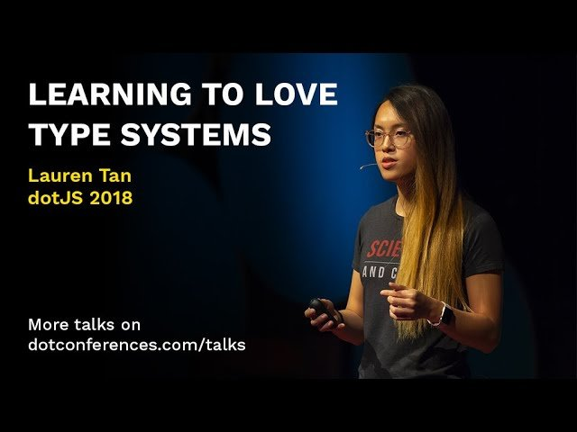

2018 · dotJS
Learning to Love Type Systems

Viewing notes
The Paris edition uses diagrams mapping input values to outputs. Follow the arrows as Tan introduces total and partial functions. The diagrams invite two practical questions: which inputs does the implementation cover, and how will its caller recognize a missing result? The later example with optional values and composition gives the absence of a result an explicit place in the interface. Revisit the cardinality section to see how a narrower type changes the number of cases left to consider.